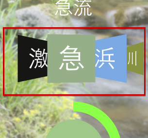
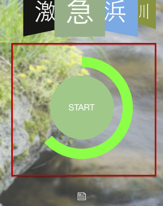
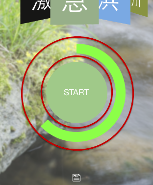

赤枠の部分を左右にスワイプして、お好みの音を選んでください。

赤枠の部分を押すことで、再生、停止を切り替えることができます。

赤枠の部分をドラッグすることで音量が調節できます。右周りに回すことで音量があがります。本アプリに使用した著作物を以下に示します。
アイコン: Linecons, © Adrian http://designmodo.com/linecons-free/
背景画像: Photo AC, © 2014 ACworks Co.,Ltd. http://www.photo-ac.com/
効果音: On-Jin 音人, © 2004-2014 On-Jin ～音人～＆E.EFFECT http://on-jin.com/
ライブラリ:
UIImage-BlurredFrame, © 2013 Adrián González https://github.com/Adrian2112/UIImage-BlurredFrame/
OpenAL, © Loki Software http://www.openal.org/